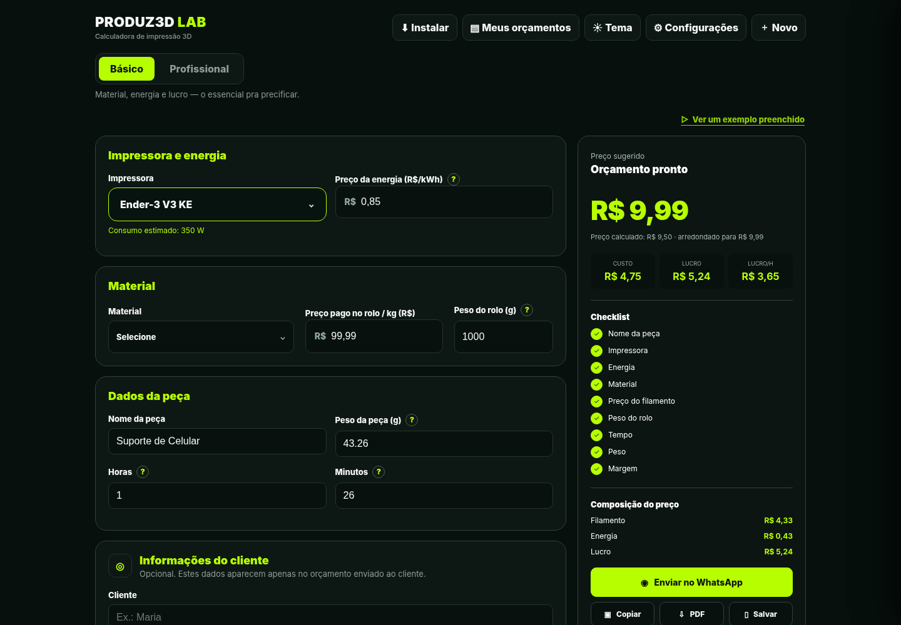
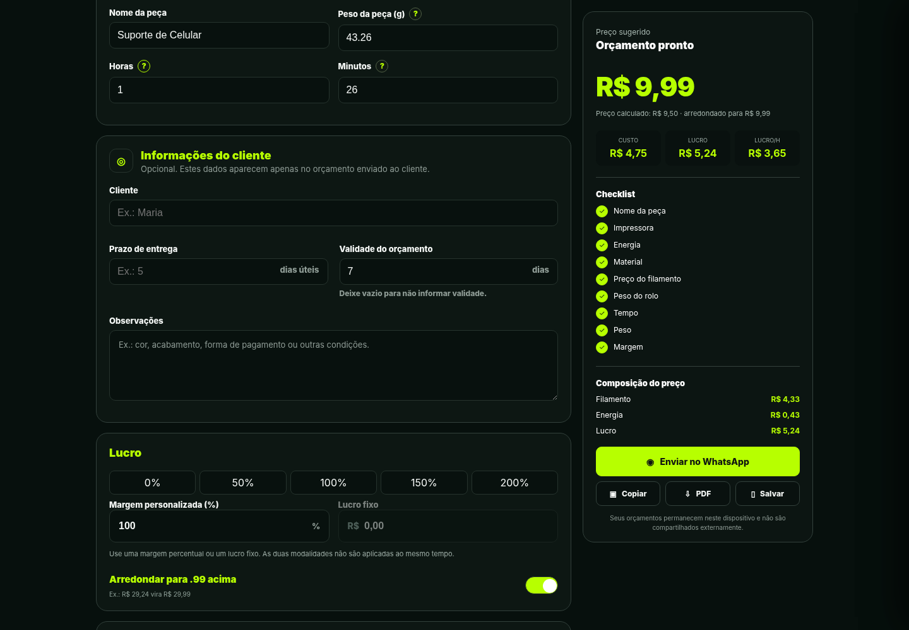
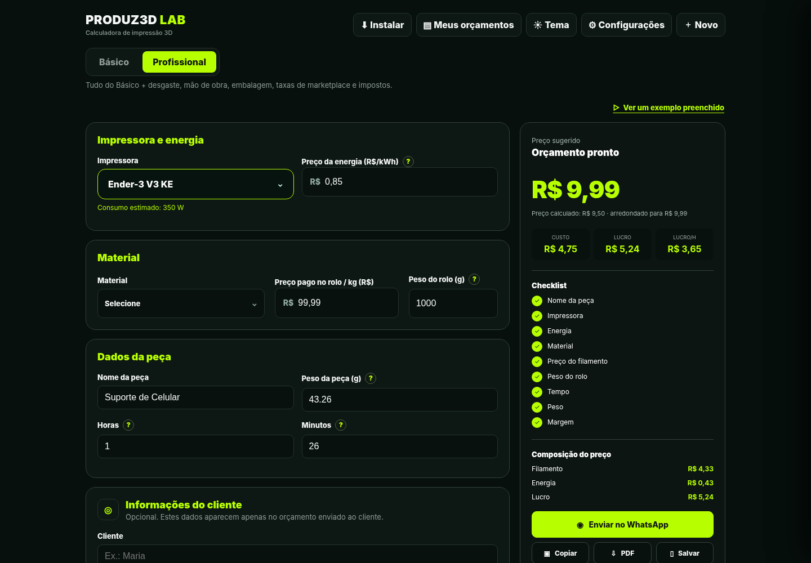
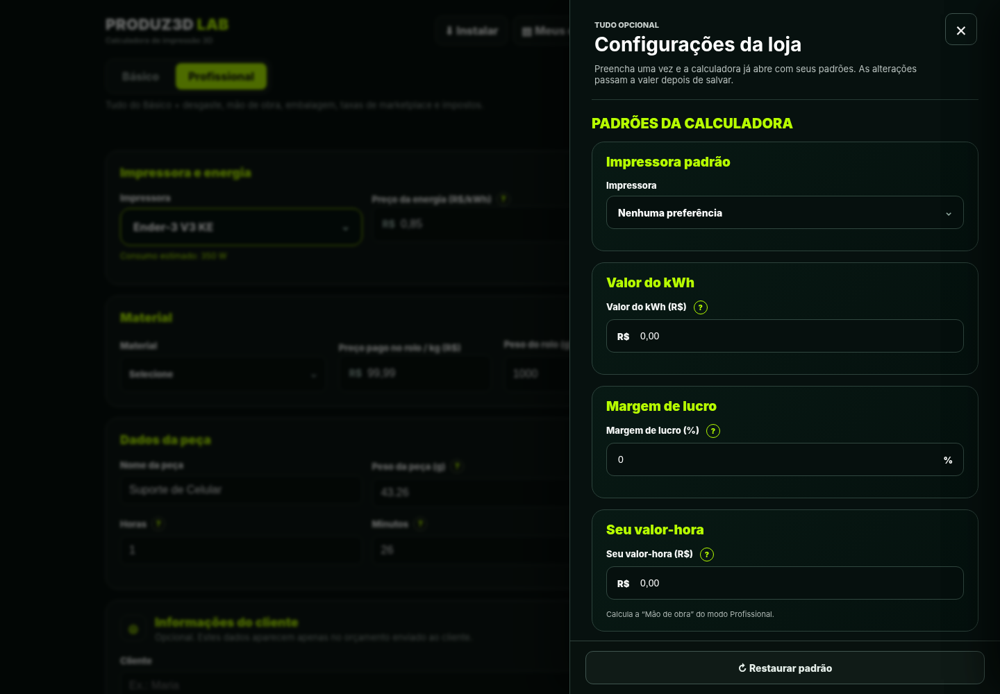

01
Custos esquecidos
Energia, tempo de máquina, desgaste e mão de obra também fazem parte da produção.
Pare de definir preços no achismo. Calcule os principais custos da sua impressão 3D, escolha sua margem de lucro e prepare orçamentos com mais confiança.

Se você considera apenas o filamento, pode deixar de fora despesas que impactam seu resultado. Sua precificação precisa enxergar além do material.
Energia, tempo de máquina, desgaste e mão de obra também fazem parte da produção.
Sem organizar os custos, fica difícil saber se o valor cobrado faz sentido.
Profissionalize a apresentação dos valores e facilite o envio ao cliente.
Uma calculadora desenvolvida para quem imprime por hobby, sob encomenda ou para vender.

Faça cálculos rápidos ou considere mais variáveis para precificar com maior detalhamento.

Organize os fatores envolvidos na produção e tome decisões de preço com mais clareza.

Personalize parâmetros da sua operação e organize os orçamentos de forma prática.
Tenha uma ferramenta dedicada à precificação de impressões 3D e dê mais profissionalismo à sua rotina.
GARANTIR MINHA CALCULADORA →Compra e condições apresentadas no checkout seguro da Kiwify.
Não. O modo Básico ajuda a começar com os dados essenciais, enquanto o Profissional permite adicionar custos mais detalhados.
Sim. A interface foi desenvolvida para uso pelo navegador em celulares e computadores compatíveis.
Sim. Ela permite organizar orçamentos, gerar PDF e compartilhar informações pelo WhatsApp.
Ao clicar em qualquer botão de compra, você será direcionado ao checkout da Kiwify, onde poderá conferir o preço e as condições apresentadas para o produto.